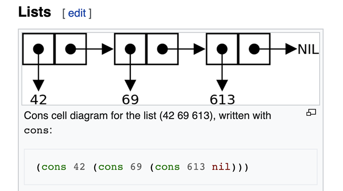
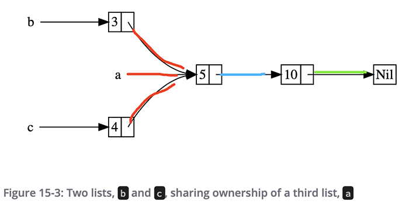
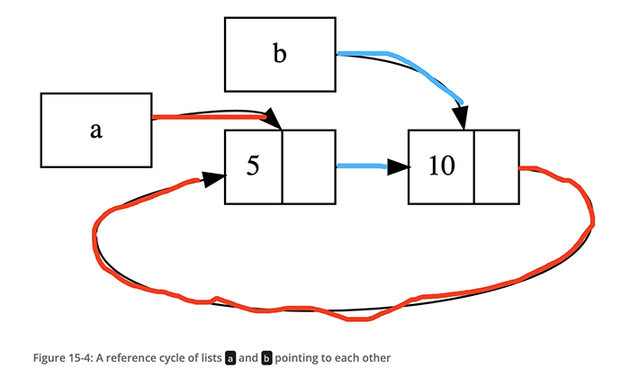

《The Rust Programming Language》读书笔记（第 12-16 章）
书接上回，第 12-16 章的笔记。
Chapter 12 - An I/O Project: Building a Command Line Program
- Page 268基本代码（Monolithic）：
- src/main.rs：
// src/main.rs
use std::env;
use std::process;
use minigrep::Config;
fn main() {
// "unwrap_or_else" allows us to define some non-panic error handling.
// "env::args()" returns an iterator.
let config = Config::new(env::args()).unwrap_or_else(|err| {
// closure (anonymous function).
eprintln!("Problem parsing arguments: {}", err);
process::exit(1);
});
if let Err(e) = minigrep::run(config) {
// prints to the standard error stream.
eprintln!("Application error: {}", e);
process::exit(1);
}
}
- src/lib.rs：
// src/lib.rs
use std::error::Error;
use std::fs;
use std::env;
// the function will return a type that implements the "Error" trait,
// but we don’t have to specify what particular type the return value will be.
pub fn run(config: Config) -> Result<(), Box<dyn Error>> {
// propagate errors.
let contents = fs::read_to_string(config.filename)?;
let results = if config.case_sensitive {
search(&config.query, &contents)
} else {
search_case_insensitive(&config.query, &contents)
};
for line in results {
println!("{}", line);
}
// we’re calling "run" for its side effects only.
Ok(())
}
pub struct Config {
pub query: String,
pub filename: String,
pub case_sensitive: bool,
}
impl Config {
pub fn new(mut args: env::Args) -> Result<Config, &'static str> {
args.next(); // skip the filename.
let query = match args.next() {
Some(arg) => arg,
None => return Err("Didn't get a query string"),
};
let filename = match args.next() {
Some(arg) => arg,
None => return Err("Didn't get a file name"),
};
let case_sensitive = env::var("CASE_INSENSITIVE").is_err();
Ok(Config {
query, filename, case_sensitive,
})
}
}
pub fn search<'a>(query: &str, contents: &'a str) -> Vec<&'a str> {
contents.lines().filter(|line| line.contains(query)).collect()
}
pub fn search_case_insensitive<'a>(
query: &str,
contents: &'a str,
) -> Vec<&'a str> {
// will return a String, rather than string slice.
let query = query.to_lowercase();
let mut results = Vec::new();
// "lines()" returns an iterator.
for line in contents.lines() {
if line.to_lowercase().contains(&query) {
results.push(line);
}
}
results
}
#[cfg(test)]
mod tests {
use super::*;
#[test]
fn one_result() {
let query = "duct";
let contents = "\
Rust:
safe, fast, productive.
Pick three.
Duct tape.";
assert_eq!(vec!["safe, fast, productive."], search(query, contents));
}
#[test]
fn case_insensitive() {
let query = "rUsT";
let contents = "\
Rust:
safe, fast, productive.
Pick three.
Trust me.";
assert_eq!(
vec!["Rust:", "Trust me."],
search_case_insensitive(query, contents)
);
}
}
- Page 286TDD（Test-Driven Development）的基本实施步骤：
- 编写一个会导致失败的测试，并确定其失败原因符合预期；
- 添加或修改实现代码使得该测试可以通过；
- 重构上一步中新添加的代码或修改的代码，同时保证测试持续通过；
- 重复第一步。
Chapter 13 - Functional Language Features: Iterators and Closures
- Page 288闭包（Closure）：
- 即“匿名函数”（与 C++ 中的 Lambda 类似），可以赋值给变量、作为参数或返回值；
- 普通函数通常需要被作为公共接口，从而提供给外部用户使用，因此需要类型注解；而闭包通常仅用于非暴露的内部代码，且作为匿名函数使用。不仅如此，闭包实现通常较短且仅与其定义上下文的一小块逻辑相关联，因此编译器可以可靠地自动推断闭包函数的输入参数与返回值的类型；
fn add_one_v1 (x:u32) -> u32 { x + 1 } // function definition.
let add_one_v2 = |x: u32| -> u32 { x + 1 }; // the rests are closure definition.
let add_one_v3 = |x| { x + 1 };
let add_one_v4 = |x| x + 1 ;
- 可以捕获其定义所在作用域内的其他变量值。在捕获时，闭包会使用额外的内存来存放捕获的变量值。闭包可以使用三种方式来捕获外界的变量：
FnOnce：将捕获变量的所有权转移到闭包中，比如使用move标记的闭包（所有闭包默认均实现，一般仅能被执行一次）；FnMut：以“可变引用”的方式捕获外界变量；Fn：以“不可变引用”的方式捕获外界变量。
fn main() {
let x = vec![1, 2, 3];
let equal_to_x = move |z| z == x; // the value of "x" has been moved into the closure.
let y = vec![1, 2, 3];
assert!(equal_to_x(y));
}
- 每个闭包实例都有自己独一无二的的匿名类型，即使两个闭包有同样的签名，它们的类型也并不相同。为了定义可以容纳闭包的集合，可以使用
Fn\FnMut\FnOncetraits，
// memoization.
struct Cacher<T>
where T: Fn(u32) -> u32, {
calculation: T,
value: Option<u32>,
}
impl<T> Cacher<T>
where T: Fn(u32) -> u32, {
fn new(calculation: T) -> Cacher<T> {
Cacher {
calculation,
value: None,
}
}
fn value(&mut self, arg: u32) -> u32 {
match self.value {
Some(v) => v,
None => {
let v = (self.calculation)(arg);
self.value = Some(v);
v
}
}
}
}
- Page 303迭代器（Iterator）：
- 允许按顺序对一个序列中的元素依次进行处理；
- Rust 中的迭代器是 “lazy” 的，即在每一次调用
next()时（显式/隐式）才会返回集合中的元素。for-in 语句会转移迭代器对象的所有权；
fn main() {
let v1 = vec![1, 2, 3];
let v1_iter = v1.iter(); // return an iterator for v1.
for val in v1_iter {
println!("{}", val);
}
}
- 所有迭代器都实现了标准库中定义的 Iterator trait，以及对应的
next()方法。集合的三种迭代器类型：iter()：返回不可变引用；iter_mut()：返回可变引用；into_iter()：返回集合元素的所有权。
- 当迭代器被“用尽（consuming out）”后，无法再被重复使用。
fn main() {
let mut x = vec![1, 2, 3];
let v1_iter = x.iter();
for &val in v1_iter {
// got immutable references to the values inside "x".
println!("{}", val);
}
let mut v2_iter = x.iter_mut();
if let Some(v) = v2_iter.next() { // pattern matching.
// got mutable references.
*v = 100; // dereference and assign.
}
let v3_iter = x.into_iter();
for val in v3_iter {
// take the ownership of the values.
println!("{}", val);
}
// println!("{:#?}", x); // panic!.
}
- 可以通过 iterator adaptor 将一个迭代器转换为另一种迭代器。通过这种方式，可以“串联”起多个适配器以对集合中的数据进行不同的转换：
fn main() {
let v1: Vec<i32> = vec![1, 2, 3];
// the iterator adaptor is lazy.
let v2: Vec<_> = v1.iter().map(|x| x + 1).collect();
println!("{:#?}", v2);
}
- 结合使用迭代器与闭包：
#[derive(PartialEq, Debug)]
struct Shoe {
size: u32,
style: String,
}
fn shoes_in_my_size(shoes: Vec<Shoe>, shoe_size: u32) -> Vec<Shoe> {
// capture the surrounding parameter.
shoes.into_iter().filter(|s| s.size == shoe_size).collect()
}
- 自定义迭代器：为自定义类型实现
Iteratortrait；
struct Counter {
count: u32,
}
impl Counter {
fn new() -> Counter {
Counter { count: 0 }
}
}
impl Iterator for Counter {
type Item = u32; // the iterator will return u32.
fn next(&mut self) -> Option<Self::Item> {
if self.count < 5 {
self.count += 1;
Some(self.count)
} else {
None
}
}
}
fn main() {
let counter = Counter::new();
let c = counter.iter();
let counter_v: Vec<_> = counter.map(|x| x + 1).collect();
println!("{:#?}", counter_v);
}
- 迭代器是 Rust 众多“零开销抽象（zero-cost abstractions）”特性之一，因此相较于使用手写的循环实现，使用迭代器不会产生额外的性能开销（C++ 的实现类似）。
Chapter 14 - More About Cargo and Crates.io
- Page 320自定义发布和开发时选项：
[profile.dev] # from 1 to 3.
opt-level = 0
[profile.release]
opt-level = 3
- Page 321文档注释：
///。
- 在执行
cargo doc --open时会自动生成含有描述公有 API 使用方法的 HTML 版本文档； - 在执行
cargo test时，文档注释中的测试用例也会自动执行； - 在注释中支持使用 Markdown 格式。
/// Adds one to the number given.
/// # Examples
///
/// ```
/// let arg = 5;
/// let answer = my_crate::add_one(arg); ///
/// assert_eq!(6, answer);
/// ```
/// # Panics
/// // describe the exposed functions that may cause panic.
/// # Errors
/// // describe the exposed functions that returns Result.
/// # Safety
/// // describe the exposed functions which are unsafe.
pub fn add_one(x: i32) -> i32 {
x + 1
}
- Page 323用于整体描述模块内容的注释类型：
- 一般用在 crate root 文件（模块）中。
// src/lib.rs
//! # My Crate
//!
//! `my_crate` is a collection of utilities to make performing certain //! calculations more convenient.
/// Adds one to the number given.
- Page 329可以使用
pub use重新整理导出 API 接口的引用结构。 - Page 330为将要发布的 crate 添加元信息：
[package]
name = "guessing_game"
version = "0.1.0"
authors = ["Becavalier "]
edition = "2018"
description = "A fun game where you guess what number the computer has chosen."
license = "MIT OR Apache-2.0"
- 可以使用
cargo publish发布 crate； - 目前 crates.io 暂无 namespacing 机制（考虑到 Namespace Squatting 等一系列潜在的问题）；
- Page 332使用
cargo yank --vers <version>阻止某一版本 crate 被新的项目使用；反之：cargo yank --vers <version> --undo。 - Page 333Cargo Workspace：
- “工作空间”由一系列的“包”组成，它们共享同一个 Cargo.lock 文件和编译输出目录，可用于组织大型 Rust 项目中相关的包；
- 工作目录中的每一个 library crate 都需要被单独发布。
[workspace]
# specify packages.
members = [
"adder",
"add-one",
]
- Page 339使用
cargo install安装来自 Crates.io 的二进制包（默认安装在 $HOME/.cargo/bin），并可在系统的全局环境下使用。
Chapter 15 - Smart Pointers
- Page 341智能指针（Smart Pointer）：
- Rust 中引用和智能指针的区别：引用是一种指针，这种指针仅能够“借用”数据；而智能指针则“拥有”它们所指向的数据；
- 智能指针通常使用 struct 实现，且实现了
Deref与Drop两个 traits；Dereftrait 允许一个实例能够像引用一样被解引用；Droptrait 允许自定义当一个智能指针的实例脱离当前作用域时的行为。
- 三种标准库中的常见智能指针类型：
Box<T>：用于在堆上分配空间；Rc<T>：基于“引用计数”的智能指针，允许拥有多个所有权；Ref<T>与RefMut<T>：通过RefCell<T>访问，该类型在运行时而不是编译时强制执行借用规则。
- Page 342
Box<T>：
- 适用场景：
- 如果有一个在编译时无法得知其大小的类型，并且想要在需要精确大小的上下文中使用该类型的值；
- 当有大量数据并且想要转移所有权，但要确保不会复制数据时；
- 当想拥有一个值并且只在乎它实现了特定特征的 trait，而不是特定类型时。
- 可以像使用引用一样的方式来使用该指针；
- 当该类型指针脱离当前作用域时，其指向的堆内存会被自动释放。
fn main() {
let mut b = Box::new(5); // allocated on the heap.
*b = 10; // manipulate as a pointer.
println!("b = {}", b);
}
// "b" will be deallocated before getting here.
- Recursive Types：即某种类型，其大小无法在编译时得知。该类型的一个值其本身可以包含有另一个相同类型的值（无限递归）。比如 Cons List，在 Rust 中该类型可借助 Box 实现：

enum List {
Cons(i32, Box<List>), // save a pointer with a fixed size.
Nil,
}
use crate::List::{Cons, Nil};
fn main() {
let list = Cons(1,
Box::new(Cons(2,
Box::new(Cons(3,
Box::new(Nil))))));
}
- Page 348
Dereftrait：
- 对于可变引用，可以实现
DerefMuttrait 来支持其解引用行为。
fn main() {
let x = 5;
let y = &x; // pointer to the original value.
let m = Box::new(x); // pointer to a copied value on the heap.
assert_eq!(5, *y);
// assert_eq!(5, y); // panic!, they are different types.
let mut n = MyBox::new(x);
*n = 10; // mutation.
assert_eq!(10, *n); // underlying: *n -> *(n.deref()).
}
struct MyBox<T>(T); // tuple struct.
impl<T> MyBox<T> {
fn new(x: T) -> MyBox<T> {
MyBox(x)
}
}
use std::ops::Deref;
impl<T> Deref for MyBox<T> { // &T -> &U.
type Target = T; // define an associated type.
fn deref(&self) -> &T {
&self.0
}
}
impl<T> DerefMut for MyBox<T> { // for mutability. &mut T -> &mut U.
fn deref_mut(&mut self) -> &mut T {
&mut self.0
}
}
- Deref Coercion：对于实现了
Dereftrait 的类型，其在作为函数和方法的参数时，Rust 会将该类型转换为对其他类型的引用。当将对特定类型的值的引用作为参数，传递给与函数或方法定义中的参数类型不匹配的函数或方法时，会自动发生该转换。一系列对deref()的调用会将我们提供的类型转换为参数需要的类型。
fn hello(name: &str) {
println!("Hello, {}!", name);
}
fn main() {
let m = MyBox::new(String::from("Rust"));
hello(&m);
// hello(&(*m)[..]); // original way with "Deref Coercion".
}
- Page 354
Droptrait：
- 可以自定义当某个值脱离当前作用域时的行为；
- 变量会根据它们创建时相反的顺序来依次调用该方法；
struct S {
data: String,
}
impl Drop for S {
fn drop(&mut self) {
println!("Dropping S with data `{}`!", self.data);
}
}
fn main() {
let c = S {
data: String::from("my stuff"),
};
let d = S {
data: String::from("other stuff"),
};
}
- 可以使用
std::mem::drop()提前调用某个变量的 drop 方法（比如用于在某个作用域内提前释放锁）：
fn main() {
let c = S {
data: String::from("my stuff"),
};
// std::mem::drop(c);
drop(c); // drop "c" manually.
println!("S dropped before the end of main.");
}
- Page 358
Rc<T>：
- 基于“引用计数”的智能指针；
- 仅适用于“单线程”场景；
- 仅支持编译时的不可变引用；
- 使用场景：程序在多个地方需要使用某个在堆上分配的资源，且无法在编译时得知哪一部分代码会最后一个使用该资源。

enum List {
Cons(i32, Rc<List>),
Nil,
}
use crate::List::{Cons, Nil};
use std::rc::Rc;
fn main() {
let a = Rc::new(Cons(5,
Rc::new(Cons(10,
Rc::new(Nil)))));
let b = Cons(3, Rc::clone(&a)); // increments the reference count.
let c = Cons(3, Rc::clone(&a));
}
- Page 363
RefCall<T>：
- 代表对它所持有数据的单一所有权，主要在当确定代码遵循借用规则，但编译器无法理解并保证这一点的时候使用。
- 仅适用于“单线程”场景；
- 支持运行时的可变与不可变引用；
- Interior Mutability：是 Rust 中的一种设计模式，它允许通过数据的不可变引用来在运行时对数据进行变更。被该类型“包裹”的对象可以通过不可变引用来进行变更。
- Page 371结合使用
RefCell<T>与Rc<T>：
- 可用于实现可变数据的多重所有权：
#[derive(Debug)]
enum List {
Cons(Rc<RefCell<i32>>, Rc<List>),
Nil,
}
use crate::List::{Cons, Nil};
use std::rc::Rc;
use std::cell::RefCell;
fn main() {
let value = Rc::new(RefCell::new(5));
let a = Rc::new(Cons(Rc::clone(&value), Rc::new(Nil)));
let b = Cons(Rc::new(RefCell::new(3)), Rc::clone(&a));
let c = Cons(Rc::new(RefCell::new(4)), Rc::clone(&a));
*(value.borrow_mut()) += 10; // automatic referencing and dereferencing.
println!("a after = {:?}", a);
println!("b after = {:?}", b);
println!("c after = {:?}", c);
}
- Page 373循环引用：
- 一个产生循环引用的例子：

use crate::List::{Cons, Nil};
use std::rc::Rc;
use std::cell::RefCell;
#[derive(Debug)]
enum List {
Cons(i32, RefCell<Rc<List>>),
Nil,
}
impl List {
fn tail(&self) -> Option<&RefCell<Rc<List>>> {
match self {
Cons(_, item) => Some(item),
Nil => None,
}
}
}
fn main() {
let a = Rc::new(Cons(5, RefCell::new(Rc::new(Nil))));
let b = Rc::new(Cons(10, RefCell::new(Rc::clone(&a))));
if let Some(link) = a.tail() {
*link.borrow_mut() = Rc::clone(&b);
}
}
- 借助 Weak<T> 解决循环引用：
- 调用
Rc::clone()会增加 strong_count 的数量，而调用Rc::downgrade()会返回一个类型为Weak<T>的智能指针，并同时增加 weak_count 的数量。而 weak_count 的数量是否为零，不会影响Rc<T>指针的释放； - 在使用返回的
Weak<T>前需要调用 upgrade 以返回该“弱指针”的可用状态（是否已被释放），该状态会被存放在 Option<Rc> 类型中。
use std::rc::{Rc, Weak};
use std::cell::RefCell;
#[derive(Debug)]
struct Node {
value: i32,
parent: RefCell<Weak<Node>>,
children: RefCell<Vec<Rc<Node>>>,
}
fn main() {
let leaf = Rc::new(Node {
value: 3,
parent: RefCell::new(Weak::new()), // placeholder.
children: RefCell::new(vec![]),
});
let branch = Rc::new(Node {
value: 5,
parent: RefCell::new(Weak::new()), // placeholder.
children: RefCell::new(vec![Rc::clone(&leaf)]),
});
*leaf.parent.borrow_mut() = Rc::downgrade(&branch); // populating.
println!("leaf parent = {:#?}", leaf.parent.borrow().upgrade()); // return Option<_, None>.
}
Chapter 16 - Fearless Concurrency
- Page 383使用线程：
- 由编程语言提供的线程一般被称为 “green thread”，与操作系统提供的线程一般呈“多对多”关系。前者会实际运行在后者的上下文中；由于“多对多”模型需要更多的运行时（由编程语言自行插入到二进制可执行文件中的）代码，因此默认情况下 Rust 标准库仅提供“一对一”的线程模型；
- 默认情况下，当主线程退出时，其他线程会停止运行并被销毁。可以使用创建线程时返回的 JoinHandle 类型上的 join() 方法，来让当前线程等待（阻塞），直到新创建线程的执行完成。
use std::thread;
use std::time::Duration;
fn main() {
// by default, the new thread will be stopped when the main thread ends.
// "thread::spawn()" returns a "JoinHandle".
let handle = thread::spawn(|| {
for i in 1..10 {
println!("hi number {} from the spawned thread!", i);
thread::sleep(Duration::from_millis(1));
}
});
for i in 1..5 {
println!("hi number {} from the main thread!", i);
thread::sleep(Duration::from_millis(1));
}
// let the current thread wait here for the thread to finish.
handle.join().unwrap();
}
- 使用带有 move 语义的闭包来在线程间移动资源：
use std::thread;
fn main() {
let v = vec![1, 2, 3];
// force the closure to take ownership of the values it’s using.
let handle = thread::spawn(move || {
println!("Here's a vector: {:?}", v);
});
handle.join().unwrap();
}
- Page 391Message Passing：
- 线程或参与者通过互相发送包含数据的消息进行通信。“*Do not communicate by sharing memory; instead, share memory by communicating.*”；
- 可以通过克隆 transmitter（*clone()*）来支持多个线程的消息发送端；
- 仅支持“单一所有权”，即同一时间只有一个线程拥有、且可以处理该资源。
use std::thread;
use std::sync::mpsc; // "multiple producer, single consumer".
fn main() {
// get the "sending end" (transmitter) and "receiving end" (receiver).
let (tx, rx) = mpsc::channel();
thread::spawn(move || {
let val = String::from("Hi");
// send a message.
tx.send(val).unwrap();
});
// block the main thread’s execution and wait until a value is sent down the channel.
let received = rx.recv().unwrap();
// we can even iterate the receiver directly.
// for v in rx {
// println!("Got: {}", received);
// }
// let received = rx.try_recv().unwrap(); // the non-blocking version, can be used within a loop.
println!("Got: {}", received);
}
- Page 398共享状态多线程：
- 支持“多所有权”，允许多个线程处理某个特定资源（内存）；
- 使用“互斥锁（Mutex，Mutual Exclusion）”仅允许一次从一个线程访问数据，以防止数据竞争问题。一个线程需要首先发出信号，告知其想要获得互斥锁，互斥锁是 Mutex 中的一种数据结构，用于表明当前谁拥有对某个数据的独占权。而当线程使用数据完毕后，需要释放锁。
use std::sync::Mutex;
fn main() {
let m = Mutex::new(5); // wrap the data inside the Mutex.
{
// "lock()" will block the thread until getting the lock.
// will return a MutexGuard, which is a smart pointer.
let mut num = m.lock().unwrap();
*num = 6;
}
// the lock will be released automatically when it goes out of the scope.
println!("m = {:?}", m);
}
- 在多个线程间使用 Mutex 访问共享数据：
- 需要使用线程安全的 “Arc（Atomic）” 来提供对 Mutex 的多所有权，每个所有权分发给一个单独的线程来使用。
use std::sync::{Mutex, Arc};
use std::thread;
fn main() {
// use thread-safe Rc -> Arc.
let counter = Arc::new(Mutex::new(0));
let mut handles = vec![];
for _ in 0..10 {
let counter = Arc::clone(&counter);
let handle = thread::spawn(move || {
let mut num = counter.lock().unwrap();
*num += 1;
});
handles.push(handle);
}
for handle in handles {
handle.join().unwrap();
}
println!("Result: {}", *counter.lock().unwrap());
}
- Mutex<T> 也提供了 interior mutability 的能力。
- RefCell<T> / *Rc<T>*；
- Mutex<T> / *Arc<T>*。
- Page 406
Sendtrait：
- 一个实现了该 trait 的类型其所有权可以在多个线程间转移。
- Page 407
Synctrait：
- 一个实现了该 trait 的类型可以被多个线程引用。